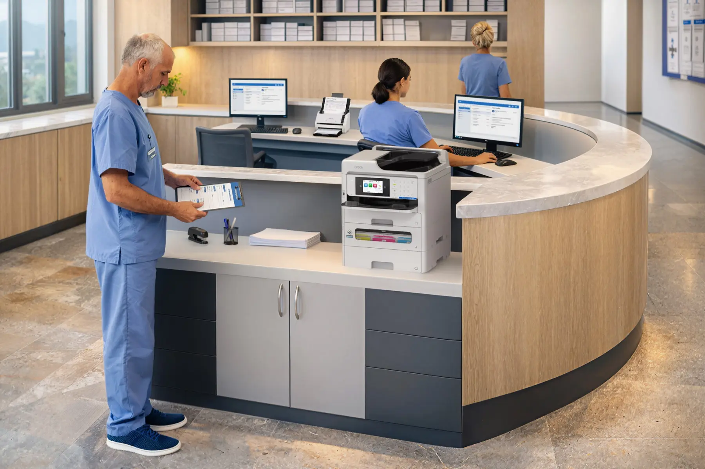

Epson workgroup
EM-C800 and WF-C5890-class systems for compact, active environments where color, scanning, efficiency, and fewer interventions matter.
Epson Desktop & Workgroup Systems
Matrix offers Epson systems for individual users, remote work, branches, active workgroups, departments, and document-capture requirements.
Featured Workgroup System
One of Matrix's most frequently selected systems, the EM-C800 brings color printing, copying, scanning, and faxing into a compact A4 workgroup platform powered by PrecisionCore Heat-Free technology.

Two-Minute Overview
This Epson product tour provides a concise look at the system, workflow, and workgroup capabilities.
Operating Association
EM-C800 and WF-C5890-class systems for compact, active environments where color, scanning, efficiency, and fewer interventions matter.
Compact Epson systems positioned close to the user when access, convenience, and workflow are more important than centralization.
Document scanning capabilities that move information from the point of work into the right process.
A short conversation about users, volume, applications, and constraints is usually enough to establish the right starting point.